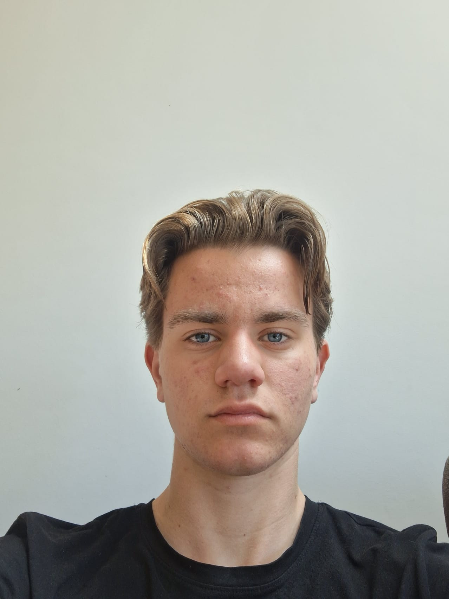
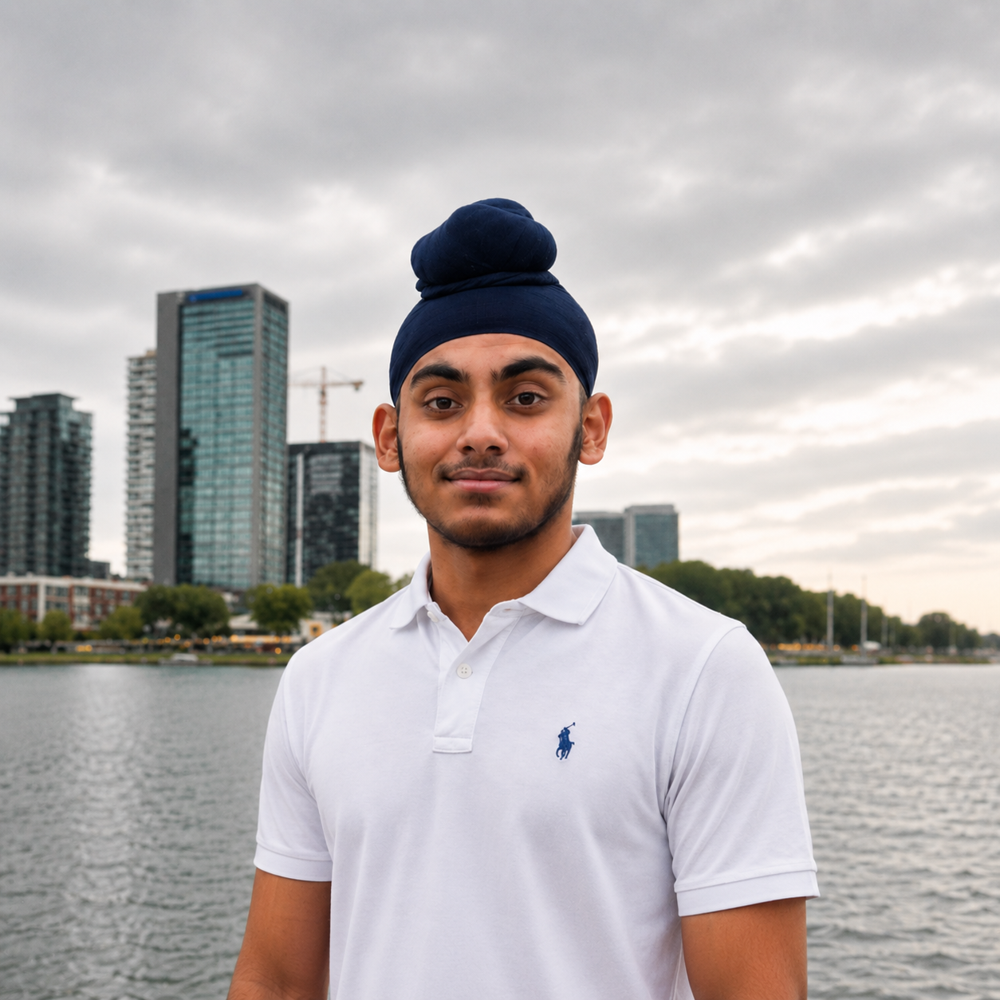
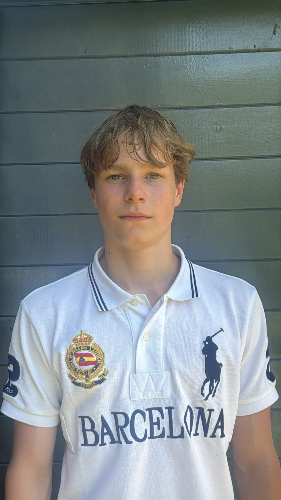
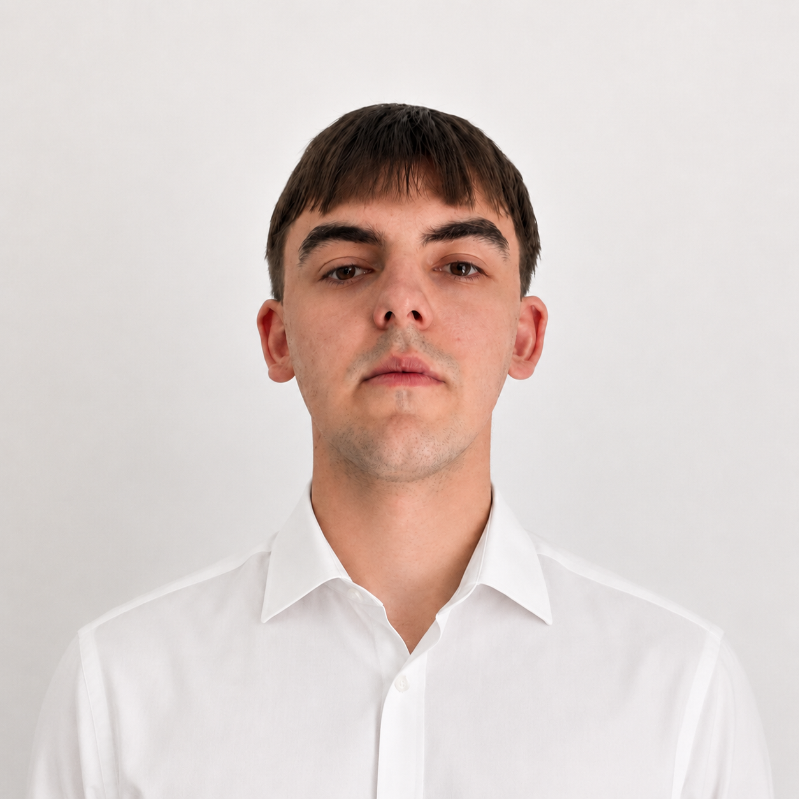

Samen bouwen aan een sterke toekomst. Een progressieve centrumpartij die innovatie, veiligheid, onderwijs en kansen voor jongeren centraal stelt.
Ontdek Ons ProgrammaKleinere klassen, betere leraren en digitale vaardigheden voor iedere leerling.
Meer kansen voor jongeren, sterke bedrijven en een innovatieve economie.
Een samenleving waarin iedereen zich veilig voelt op straat en online.
Investeren in zonne- en windenergie voor toekomstige generaties.
Meer betaalbare woningen voor starters en gezinnen.
Samenwerken met Europa en de wereld om mondiale problemen op te lossen.
Probleem: Grote klassen en lerarentekort.
Oplossingen: Maximaal 20-22 leerlingen per klas, hogere lerarensalarissen, AI en digitale vaardigheden in het onderwijs.
Waarom: Betere banen, sterkere economie en minder kansenongelijkheid.
Probleem: Toenemende criminaliteit en betrokkenheid van jongeren.
Oplossingen: Meer politie, snellere rechtspraak, zwaardere straffen en preventieprogramma's.
Waarom: Meer vertrouwen en een veiligere leefomgeving.
Probleem: Moeilijke overgang van school naar werk.
Oplossingen: Meer stageplaatsen en steun voor bedrijven die jongeren aannemen.
Waarom: Meer zelfstandigheid en minder sociale problemen.
Probleem: Klimaatverandering, CO₂-uitstoot en vervuiling.
Oplossingen: Zonne-energie, windenergie, duurzame subsidies en minder fossiele brandstoffen.
Probleem: Woningtekort en hoge huizenprijzen.
Oplossingen: Meer woningen bouwen, betaalbare huurwoningen en subsidies voor starters.
Visie: Nederland moet koploper worden in technologie.
Oplossingen: Investeren in AI, cyberveiligheid en technologie in het onderwijs.
Klimaatverandering stopt niet bij grenzen. TNL werkt samen met de Europese Unie en de Verenigde Naties aan oplossingen voor toekomstige generaties.
Plaats de foto's in dezelfde map als dit bestand.

Partijleider

Economie & Werk

Klimaat & Innovatie

Onderwijs